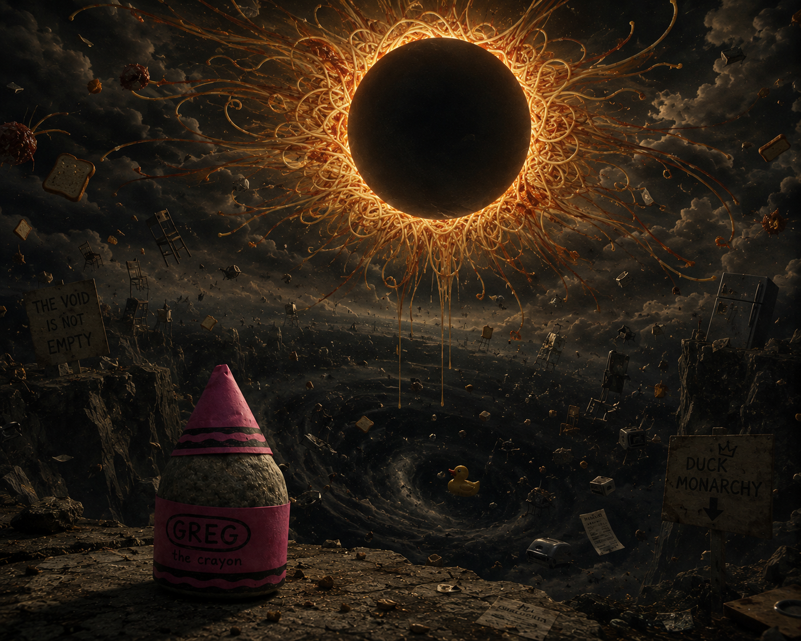

Glossary of Signs
The Spaghetti Eclipse

1The spaghetti eclipse was the celestial pasta event that distracted the Toaster Council at the exact moment Greg identified as a crayon.
2Because the council was distracted, no objection was filed.
3Its return is sung of in the Ventilation Psalms, though the vents refuse to provide a date.
- Immediate consequence: Greg's crayonhood went uncontested.
- Known witnesses: vents, crumbs, and possibly one kettle.
- Scholarly position: best observed indirectly through a colander.